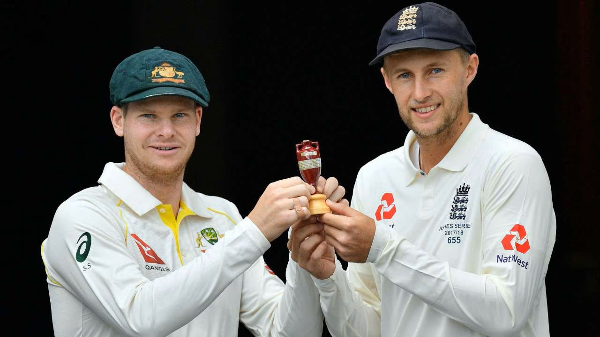

ICC CRICKET WORLD CUP
The 2023 ICC Men's Cricket World Cup
It was the 13th edition of the Cricket World Cup, a quadrennial One Day International (ODI) cricket tournament organized by the International Cricket Council (ICC).
It was hosted from 5 October to 19 November 2023 across ten venues in India. This was the fourth World Cup held in India, but the first where India was the sole host.
The tournament was contested by ten national teams, maintaining the same format used in 2019. After six weeks of round-robin matches, India, South Africa, Australia, and New Zealand finished as the top four and qualified for the knockout stage. In the knockout stage, India and Australia beat New Zealand and South Africa, respectively, to advance to the final, played on 19 November at the Narendra Modi Stadium in Ahmedabad. Australia won the final by six wickets, winning their sixth Cricket World Cup title.
Virat Kohli was named the player of the tournament and also scored the most runs, while Mohammed Shami was the leading wicket-taker. A total of 1,250,307 spectators attended the matches, the highest number in any Cricket World Cup to date. The tournament final set viewership records in India, drawing 518 million viewers, with a peak of 57 million streaming viewers.
